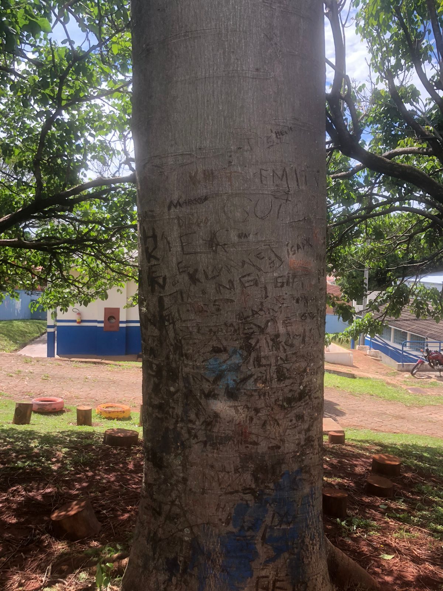

Como e quando surgiu a fotografia?
A história da fotografia começa na Antiguidade, mas somente em 1826 o primeiro registro foi feito. A façanha foi realizada pelo francês Joseph Niépce, e na mesma época, Hercule Florence, assim como seu conterrâneo, desenvolvia um método fotográfico aqui no Brasil.
